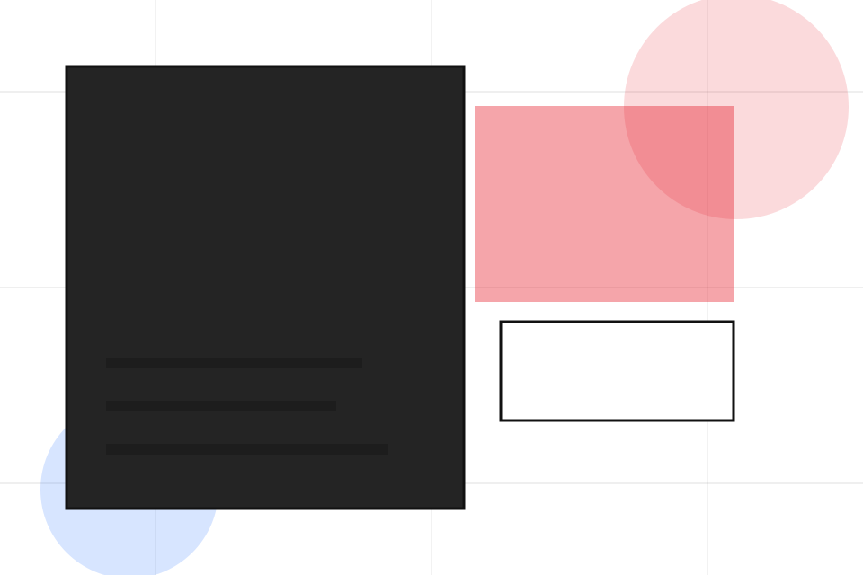
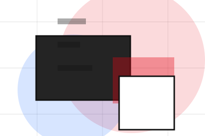
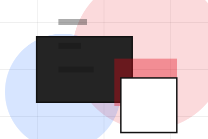
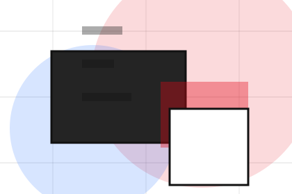
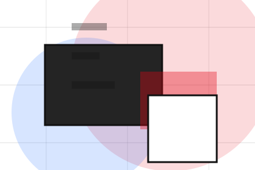
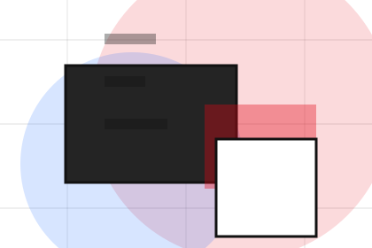
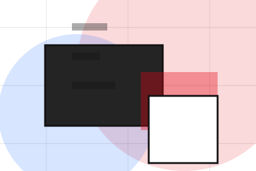
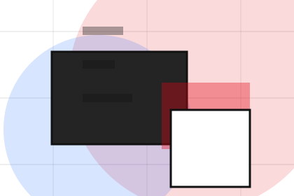
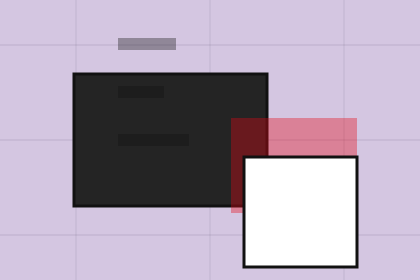

Best Fit
Who should use production and when it belongs in the process journey.
Process / 01
Process opens as a clear creative decision hub: what Studio offers, who it helps, why it matters, and which route to take first.
The first screen combines positioning, proof, primary action, and fast internal navigation, so people can act immediately or compare the rest of the process route with context.
Typographic work hero
Select the closest route and Studio keeps the next step, proof, and follow-up expectation aligned with taste and production trust.

Process / 02
Brief explains the operating sequence so visitors can see how the first request becomes a clear recommendation and follow-up.
The steps are written from the visitor side: what they do first, what Studio clarifies, what they receive, and how support continues.
Explore ProcessHow visitors begin this route and what detail is useful at the first step.
What Studio reviews, filters, or explains before recommending the next move.
What the visitor receives afterward, including support, proof, or a handoff to the next page.
Process / 04
Production explains the practical scope, best-fit situations, and expected outcome so creative visitors can compare options without decoding jargon.
The section keeps the offer concrete: what is included, who it is best for, what decision it supports, and which linked route gives the deeper detail.
Explore Process

Who should use production and when it belongs in the process journey.
Process / 05
Refinement explains the operating sequence so visitors can see how the first request becomes a clear recommendation and follow-up.
The steps are written from the visitor side: what they do first, what Studio clarifies, what they receive, and how support continues.
Explore ProcessHow visitors begin this route and what detail is useful at the first step.

What Studio reviews, filters, or explains before recommending the next move.

What the visitor receives afterward, including support, proof, or a handoff to the next page.
Process / 06
Delivery explains the operating sequence so visitors can see how the first request becomes a clear recommendation and follow-up.
The steps are written from the visitor side: what they do first, what Studio clarifies, what they receive, and how support continues.
Explore ProcessHow visitors begin this route and what detail is useful at the first step.
What Studio reviews, filters, or explains before recommending the next move.

What the visitor receives afterward, including support, proof, or a handoff to the next page.
Process / 07
Files explains the operating sequence so visitors can see how the first request becomes a clear recommendation and follow-up.
The steps are written from the visitor side: what they do first, what Studio clarifies, what they receive, and how support continues.
Explore ProcessHow visitors begin this route and what detail is useful at the first step.
What Studio reviews, filters, or explains before recommending the next move.
What the visitor receives afterward, including support, proof, or a handoff to the next page.
Process / 08
Usage explains the operating sequence so visitors can see how the first request becomes a clear recommendation and follow-up.
The steps are written from the visitor side: what they do first, what Studio clarifies, what they receive, and how support continues.
Explore ProcessHow visitors begin this route and what detail is useful at the first step.
What Studio reviews, filters, or explains before recommending the next move.
What the visitor receives afterward, including support, proof, or a handoff to the next page.
Process / 09
Aftercare explains the operating sequence so visitors can see how the first request becomes a clear recommendation and follow-up.
The steps are written from the visitor side: what they do first, what Studio clarifies, what they receive, and how support continues.
Explore Process
How visitors begin this route and what detail is useful at the first step.
What Studio reviews, filters, or explains before recommending the next move.

What the visitor receives afterward, including support, proof, or a handoff to the next page.
Process / 10
Studio closes the process route with a clear action, a quick reminder of the value, and a low-friction way to start the project.
Visitors who are ready can use the primary action. Visitors who are still comparing can scan the section links, proof, and support routes before they start the project.
Start ProjectThe final block keeps the choice simple: act now, compare one more proof route, or send enough detail for a focused response.
Start Projecttaste and production trust
A creative portfolio with identity-led project tiles, typographic scale, lightbox logic, and studio enquiry. Process ends with a direct path to start the project, plus enough context for visitors who still need to compare.

Start ProjectInformation is provided for planning and should be reviewed for the final client, location, and operating rules.